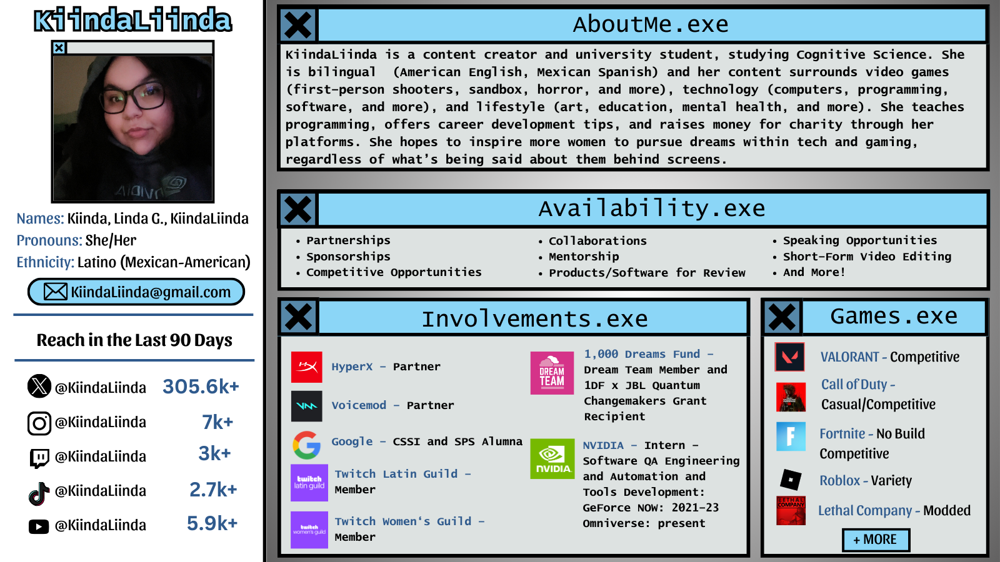

About Me
My name is Linda, but online I go by KiindaLiinda (pronounced like “kind-of” Linda). I’m a gaming and tech content creator and I have been creating content since 2017. Outside of gaming, I’m a university student, studying Cognitive Science, and have been interning with NVIDIA since 2021. I actively work on breaking barriers for women in the gaming and tech industry, fundraise for charity, and participate in gaming tournaments and events.
The Quick Facts:
- Located in California, USA
- Content Creator, mainly on Twitch
- Gamer, mainly on Call of Duty, Valorant, Fortnite, Roblox
- Coder/Programmer, knowing C++, HTML/CSS, JavaScript, Java, Python
- Partnered with HyperX and Voicemod
- 1,000 Dreams Fund - Dream Team Ambassador
- Member of the Twitch Latin and Women's Unity Guilds
- Google Computer Science Summer Institute (CSSI) and Software Product Sprint (SPS) Alumna
Contact MeMy Media Kit
My Story
Gaming
I started my journey as a content creator by streaming on Twitch with only a Playstation 4. In my early days, I would mainly stream Call of Duty, Minecraft, and Rainbow Six Siege. My goal was to make content for my friends when they weren’t able to get on their console to play. During this time, I learned how to export video footage from my console to a USB drive to create content for other platforms. I learned basic video editing on Sony Vegas and uploaded videos on to YouTube, as well as uploaded some shorter clips to Instagram.
At this time, I was interested in growing a community, so I partnered with a few friends to launch our own cross-platform community. I worked on this during my senior year of high school, and eventually created my own once I started college. When I moved into my dorm at my university, I switched from streaming on my PS4 to using my gaming laptop (only being able to play Minecraft and Rainbow Six Siege due to it not being very powerful), which I had purchased during my junior year of high school after my old laptop gave out on me. I began to learn how to use Streamlabs OBS, created my own overlays on Adobe Photoshop and Illustrator. My goal at that point was to get affiliated on Twitch.
Then, the pandemic started. It was March 2020 and everyone on campus was being told that they had to leave. I packed everything quickly and moved out. I didn’t stream much during this period of time. However, I was given the opportunity to purchase a gaming PC and decided to jump at the chance. I decided on building my own, as I wanted full customization. I had been familiar with PC components by this time, but had a little additional support from some friends to make sure I was getting only the best. I began streaming games I was unable to before, with Call of Duty: Modern Warfare (2019) being my main title at this time. I was rapidly growing throughout 2020, meeting amazing creators and friends, and eventually hitting Twitch Affiliate status.
Since then, I have had my ups and downs with the platform, but have been able to achieve many things along the way. I participated in a number of tournaments and events, received the 1,000 Dreams Fund x JBL Quantum Changemakers grant, joined the 1,000 Dreams Fund Dream Team, and joined the Twitch Latin and Women’s Unity Guilds. I still have more I want to achieve, but the goal was always just to have fun and meet some amazing people. I’m glad to say I’ve achieved that almost every day since starting this journey.
Technology and Coding
I first learned to code when I was 12 years old in 7th grade. I joined the robotics team at my middle school and learned to code in a language derived from C/C++ for a tournament called Botball. That year, we ranked highest middle school, achieving 4th place overall in the competition. During this time, I was exposed to a variety of career options and decided on Computer Science only a year later.
From there, I started to do more learning on my own. I took a course online to learn how to create websites using HTML, CSS, and JavaScript (I made this website from scratch) and started doing freelance work. I didn’t get very far with freelancing, as I found that most individuals were using platforms like Squarespace and Wix to create sites, and I just didn’t find it fun.
I learned about different opportunities during high school to get involved. I participated in the #BUILTBYGIRLS WAVE program, where I was able to meet a variety of professionals working at companies like Amazon, Facebook, Netflix, and more. Through this program, I learned about the She Leads Entrepreneurship Makeathon (they’re now called Gen She). This event took place at the Snapchat HQ in Los Angeles. During that weekend, I learned the basics of starting your own business, something I was thinking of doing eventually. We had to pitch an idea for a business during this event and I won the grand prize with my idea to track data online to prevent personal information from getting stolen (which I later found out was something similar to the foundation for blockchain).
Through that program, I learned about the world of hackathons. I attended my first hackathon, AthenaHacks, at USC. I learned how to create an Android app in just a few hours. It was difficult, but I had fun. During my senior year of high school, I applied and was accepted to the Google Computer Science Summer Institute, a 3-week summer bridge program for graduating seniors, attending college in the fall, where I learned how to create web applications using Google’s App Engine, as well as refined by web development skills in HTML, CSS, and JavaScript, adding Python to my set of skills. I participated in this program at the Google offices in Venice, CA and made memories that will last a lifetime.
Through that program, I learned about the world of hackathons. I attended my first hackathon, AthenaHacks, at USC. I learned how to create an Android app in just a few hours. It was difficult, but I had fun. During my senior year of high school, I applied and was accepted to the Google Computer Science Summer Institute, a 3-week summer bridge program for graduating seniors, attending college in the fall, where I learned how to create web applications using Google’s App Engine, as well as refined by web development skills in HTML, CSS, and JavaScript, adding Python to my set of skills. I participated in this program at the Google offices in Venice, CA and made memories that will last a lifetime.
A recruiter for NVIDIA reached out to me with an opportunity. The NVIDIA Ignite Internship (previously called the Immersion Internship), a program that just got announced made for first and second year students for the summer of 2021. I was not planning on interning that summer, but decided to apply anyways and see where it would take me. I was given an offer and immediately accepted it. I entered NVIDIA as a Software Quality Assurance Engineering Intern for GeForce NOW. I learned a variety of skills and returned every summer since then, switching to Automation and Tools Development in 2023 and now switching to the Omniverse team in 2024.
Since then, I have been an advocate for women entering the tech industry. I’ve been teaching programming throughout the years, only recently started the KiindaKodiing program, to encourage more individuals to learn new skills, regardless if they want to become a programmer or not. My journey has been full of unexpected turns, but the thing I learned throughout this experience is that I need to be my biggest advocate. I didn’t have the opportunities other students had, but I did my own research to find opportunities, even if they were a far journey away from home. If there’s one thing you can take away from this, it’s that you can achieve greatness, but it includes taking risks, getting out of your comfort zone, and finding your purpose.